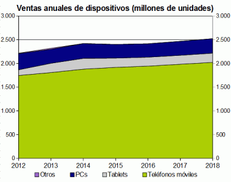
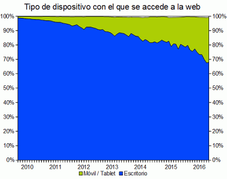
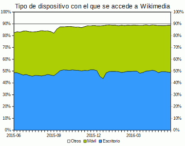

Escritorio vs móviles |
Autor: Barto Fecha: 28/06/16 |
|
La segunda década del siglo XXI está siendo la década de la informática móvil y el protagonista principal está siendo el smartphone, el teléfono móvil inteligente.
|
 |
El cambio de una informática de escritorio a una informática móvil se refleja en las estadísticas de visitas a los sitios web. Según la empresa NetMarketShare, casi uno de cada tres usuarios accederían ya a la web desde un dispositivo móvil.
Dada la dificultad de recopilar este tipo de información, lo importante en este gráfico es la tendencia, más que los valores en sí.
|
Desde mayo de 2015, Wikimedia publica en https://analytics.wikimedia.org/ estadísticas muy detalladas de sus logs de acceso. En el caso de las webs de Wikimedia, durante el último año la mitad de las visitas se producen desde ordenadores de escritorio y la otra mitad desde dispositivos móviles, aunque por tratarse de un período muy corto (un año), es difícil detectar tendencias en este gráfico. |
|  |